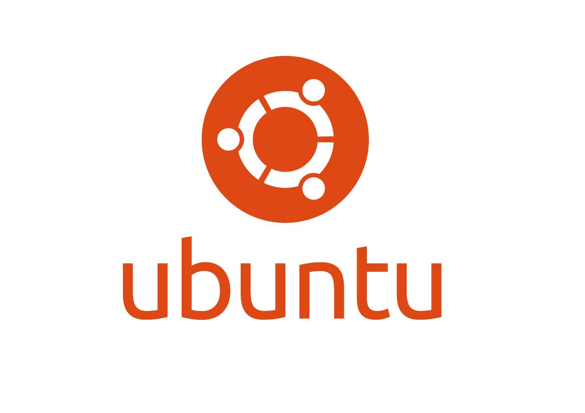

Système d'exploitation

Logiciel alternatif à
Avantages :
- Etant une distribution Linux, Ubuntu est plus stable et légère - Fontionne sans avoir à defragmenter son disque dur - Documentation actualisée fréquemment et son forum très réactif
Fonctions similaires à Windows :
- Effectuer des tâches courantes d'un PC de bureau(bureautique, internet,graphisme..) - Logiciels propriétaires à portée de main
 Télécharger le logiciel
Télécharger le logiciel